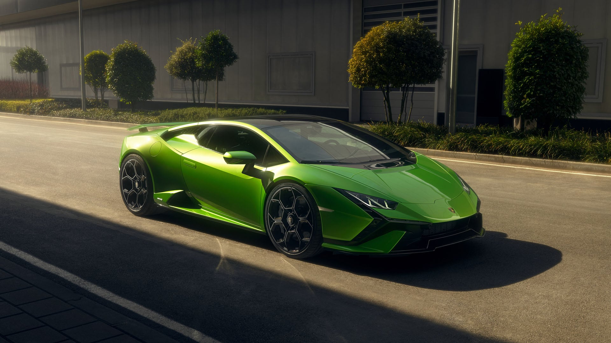
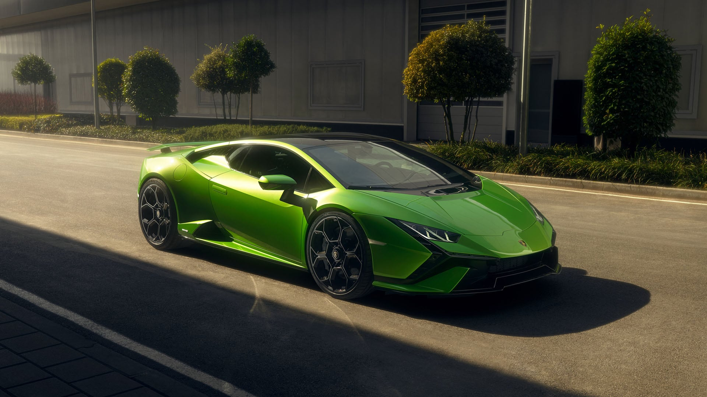
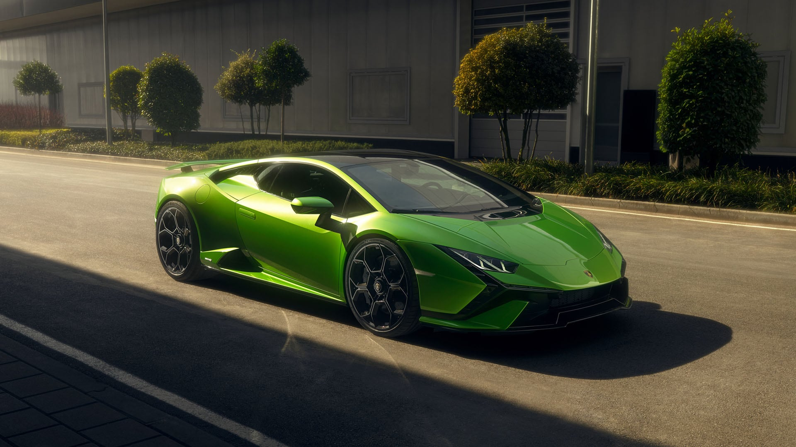

At Supercars.net we’re obsessed with companies like Lamborghini. We have so much content about this amazing company and the cars they create that we decided to get it organized. The result is this page, it is our Lamborghini hub. We have a page with all the latest and greatest Lamborghini news and reviews, as well as Lamborghini galleries and Lamborghini videos sections for those who want to sit and relax for a while with all the amazing images and crazy action from the world of Lamborghini.
Ferruccio Lamborghini took old military machines and re-purposed them as agriculture supplies such as tractors. He became very wealthy. Like anyone who comes into wealth, he bought several luxury cars, including a Ferrari. When he provided Enzo Ferrari feedback on some of the shortfalls in his cars, Ferrari told him to buzz off (paraphrasing). The rivalry had begun and Lamborghini decided to turn his hobby into a passion. Lamborghini the car company was born.
If you’re a die-hard fan of Team Bull for supercar glory, what you’re going to read next is just solidification of why this brand is a great in-your-face alternative to the snooty, posh supercar competitors. If you’ve just heard of Lamborghini, well what you’re about to read is the history of how one man’s pursuit of greatness and improvement developed a stable of the best supercars mankind has ever seen. Lamborghini’s Greatest Hits include, but not limited to the 400GT, Miura, Countach, Diablo, Murciélago and Aventador.
et us at Supercars.net walk you through a path filled with a brash, enigmatic man that wanted to show the world, and one person in particular, that his skills should not be belittled, and that the design philosophy is to not care about car racing, or capturing the podium but to produce cars that would capture people’s imaginations and break the mould of what a car should be. Before we get into the whirlwind empire that is Lamborghini.
The Lamborghini logo is in the shape of a shield that is filled with a black background and outlined with gold. Across the top of the shield is the word Lamborghini in capital letters above an image of a golden bull. Ferruccio Lamborghini believed that the bull was the perfect image to use on his company’s logo as it was a reflection of himself (he war born in Tauras and was big fan of bullfighting).

Avarage Price
200000$ model model model model
model model model modelThe top 10 automobile companies in the world are expected to grow exponentially owing to recovery
of the economy around the world coupled with increased demand from developing economies like
India, China, Brazil, and Malaysia. The global automobile market was valued at around
$1,400 billion in 2017 and is estimated to expand at a CAGR of more 3% for the next five
years to surpass $1,650 billion by the end of 2022. The top 10 car companies in the world are
geared to step up their production capacities as it is forecasted that the sales volume of
passenger cars will grow significantly from the 78 million units in 2017 to cross past the
100 million units mark within the next few years